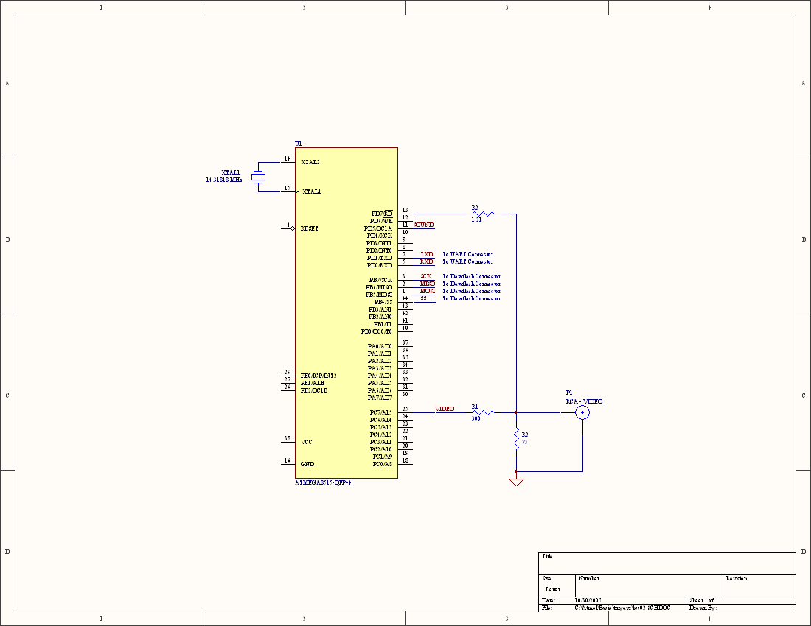

The BSS 02 Personal Computer System
The BSS 02 is a computer system inspired by early home computers, such as the Commodore PET, TRS-80, and Apple II. Because the AVR is capable of running much faster than the 6502 and Z80 processors used in the earlier computers, a complete system can consist of a single AVR with a few simple components. Despite generating the video signal through software, it still runs much, much faster than the computers that inspired it. The AVR Butterfly version uses a serial port instead of generating video, so it even more efficient.
The system consists on nothing more than an STK-500, three resistors, and a crystal. Note: The Mega8515 does not have enough on-board RAM to support the 32x16 video resolution. For video, you will need an AVR with 1k or more of RAM (or add an external SRAM to the Mega8515).
Despite it's simplicity, it drastically outperforms the computers that inspired it. I ran some simple benchmarks to test the performance. The results are summarized in the table below. This is for the video version. The serial version runs nearly twice as fast.
| Platform | Processor | FOR K=1 TO 10000:NEXT K | FOR K=1 TO 10000:PRINT K;:NEXT K |
| Commodore 64 | 6502 | 12 seconds | 2 minutes, 42 seconds |
| TRS-80 Level II | Z80 | 20 seconds | 2 minutes, 34 seconds |
| TRS-80 Level I | Z80 | 19 seconds | 4 minutes, 12 seconds |
| TRS-80 MC10 | 6801 | 9 seconds | 1 minutes, 46 seconds |
| BSS 02 | AVR | Less than 1 second | About 2.5 seconds |
Though I was tempted to use a cassette interface for loading and saving programs, I decided to use the Dataflash chip already installed on the STK-500 and AVR Butterfly. This is much faster than cassette or floppy disk drives.
I wrote this program (along with Davros and a few others) in the fall of 2005 while I was living in the German city of Frankfurt/Oder. I named it the BSS 02 because it seemed a worthy successor to the BSS 01, a pong TV game developed in Frankfurt/Oder in the early 80’s while the city was still part of the German Democratic Republic. More information on the BSS 01 can be found at the Berlin Computer Game museum’s web site:
http://www.computerspielemuseum.de/katalog.28.htmlThe code started as a port of Li-Chen Wang’s TinyBasic, published in a 1976 issue of Doctor Dobb’s Journal. Most of the original comments are still in the source. I modified this original code quite heavily, adding code to tokenize the source (allowing for more efficient use of the limited on-board RAM and improving performance), FOR/NEXT, READ/DATA, a simple file system, new math functions, limited string support, and some simple video and sound functions. I planned to add PC keyboard support, floating point math, and improve the string support but never finished.
When the BSS 02 starts, it will greet the user with the prompt:
AVR TinyBasic v1.2
OK
>_
Type in commands via a computer connected to the serial port. For example, the classic hello world program:
10 ?"Hello world!"
20 goto 10
run
Hit Ctrl-C to stop the program.
Letters A-Z can be used as variables. All arithmetic is integer.
Hex values can be used by preceeding them with &, e.g. A = &800
Summary of commands
All commands have shortcuts. For example, RET. is equivalant to RETURN.
TinyBasic is not case sensitive. PRINT is interpreted the same as print or pRiNt.
Unlike Microsoft BASIC, GOTO, GOSUB, and other commands take expressions as arguments rather than line numbers. This allows some flexibility in programming, such as creating conditional variable assignment: A=(X<5)*5 + (X>=5)*10. This will assign A to 5 if X is less than 5. If X >= 5, A will be assigned to 10.
PRINT (or ?)
Display a message. Can display quoted text, variables, or a combination of the two.
IF expression THEN command
The command can either be a line number (the GOTO will be assumed) or another BASIC command.
FOR var = expr1 TO expr2 STEP expr3
Start a loop using the variable var, starting with the value of expr1 and ending with the value of expr2. The STEP value is optional. Default step value is 1.
NEXT var
Mark the end of a FOR loop. The var is optional. If ommitted, it will loop back to the last FOR loop encountered.
GOTO expr
Jump to the line given by the expression
GOSUB expr
Call the subroutine given by the expression
RETURN
Return from subroutine
INPUT
Get a value from the user. Can be either an integer, character, or string.
READ variable
Grab the next byte from the list of bytes given in the DATA expression
NOTE: READ will never run out of data bytes to read, since it loops around to the beginning of DATA after reading the last byte
DATA expr1, expr2, ..., exprN
List of N bytes of data for the READ command
REM
Denotes comments (remarks) in the program. Anything following a REM on a line of BASIC is ignored
END
Stop executing the program and return to the command line
NEW
Erase current BASIC program from memory
POKE expr1,expr2
Write the value of expr2 to memory location expr1
CLS
Clear the display. Video version only
SET(X,Y)
Set pixel at location X,Y. X can vary from 0-63, while Y can vary from 0-31.
RESET(X,Y)
Reset (clear) the pixel at location X,Y
SOUND expr1, expr2
Play a sound of tone expr1 for duration expr2. This command is very primitive
INIT
Initialize the Dataflash file system. Erases the current contents of the Dataflash
DIR
List the directory of the Dataflash
LOAD filename
Searches for filename in the Dataflash and loads it into RAM if found
SAVE filename
Saves the BASIC program in RAM to the Dataflash with the name of filename
POINT(X,Y)
Test whether the pixel at location X,Y is set or clear
PEEK(expr)
Read the value of memory at expr
RND(expr)
Returns a random number with a value ranging from 0 to expr
ABS(expr)
Returns the absolute value of expr
NOT(expr)
Returns the one’s complement of expr
USR(expr)
Execute a function call to location expr. This allows a BASIC program to make calls to an assembly language routine. Please note that this function has not been tested extensively.
MEM
Returns the amount of available RAM
Error Messages
Errors are very limited in TinyBasic. There are only three errors: WHAT?, HOW?, and SORRY.
WHAT? usually denotes a syntax error.
HOW? indicates that a necessary argument is missing or invalid.
SORRY means the system has run out of free RAM.
Modification & Porting
Unfortunately, though the code is documented, there is currently no master document to explain how everything works in detail. It will take some time to understand all the code as it stands.
Porting to another AVR should not be difficult, however. The serial-only version of the program uses less than 4k. The video version uses less than 8k. Change the BAUD and OSC defines to match your desired serial bit rate and external clock frequency. Comment or uncomment the __VIDEO__ define depending on whether or not you want video support. Mega8515 and the Mega169 are the only two processors currently supported, but most changes will likely only require a small change to the console I/O functions (CONST, CONIN, and CONOUT). Some processors may also require the interrupt table or timer interrupt to be changed slightly.
The video version of the program will not fit inside a Mega8515 because of the limited RAM. If the Mega8515 is used with an external RAM chip, however, it will work quite well.
The file system is the same as what is used on Davros. The documentation for Davros is included.
Though this version is written for an NTSC video signal, it was originally written for PAL. Switching between the two should be relatively simple.